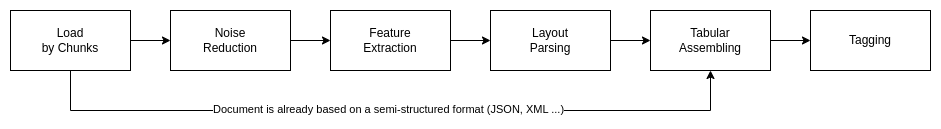

Revolutionizing Data Management: The Transformative Potential of a Novel Framework for Semi-Structured Documents
This document describes how Any2Json framework helps to manipulate semi-structured documents.
In today's data-driven landscape, navigating the complexities of semi-structured documents poses a significant challenge for organizations. These documents, characterized by diverse formats and a lack of standardization, often require specialized skills for effective manipulation and analysis. However, we propose a novel framework to address this challenge. By leveraging innovative algorithms and machine learning techniques, this framework offers a solution that transcends manual coding, providing enhanced accessibility to users across diverse skill levels. Moreover, by automating the extraction process, it not only saves time but also minimizes errors, particularly beneficial for industries dealing with large volumes of such documents. Crucially, this framework integrates seamlessly with machine learning workflows, unlocking new possibilities for data enrichment and predictive modeling. Aligned with the paradigm of data as a service, it offers a scalable and efficient means of managing semi-structured data, thereby expanding the toolkit of data services available to organizations. This document highlights the transformative potential of the framework, paving the way for organizations to harness valuable insights from previously untapped sources and drive innovation in data management and analysis.
Definitions and examples
Semi-structured documents have the characteristic of containing some type of information known a priori, but which can change the position and format within the document itself. In addition, semi-structured documents also vary a lot in terms of layout and design. Some documents have a fixed set of data but no fixed format for this data. In some documents, the date appears on the top right corner, in another variation, it is at the center of the document, and in yet another, you’ll find it in the bottom left corner. Another added complication is that the same data is qualified by different names. In one variation, a field may be called ‘Purchase Order Number’, in another - ‘PO Number’, and a few others may call it “PO #”, “PO No.” or “Order Number’. These variations are endless and because of these two challenges, you cannot use a template-based solution for these documents.
Examples
- Examples of semi-structured document include emails, XML files, JSON files, social media posts, and log files. These types of data contain both structured and unstructured information, such as a mixture of predefined fields & free-form text.
- Another classic example is the myriad of Excel files found within companies holding often precious information.
What is the problems we are trying to fix?
Semi-structured documents are usually noisy and their layout changes over time. They contain defects, usually invisible by the end user who read the document but provide a challenge to any automated process. They, also, contain tabular data but may be completed by unstructured text around. For examples, the date of the document or a product may be in the title and not in the tabular representation; simply extracting the table will miss some implicit information. These specifies stop today tool to consistently load such documents.
The first consequence is a high running cost due to maintaining the pipeline of extraction every time the layout changed, due to the custom code required that need to be modified all the time.
The second consequence is the difficulty to have a self-service to extract the data because Extract Load tools require often engineering skills (even for no/low code solution on the long run).
The solution; a framework to manipulate semi-structured document and transform them into consistent tabular output
Addressing Data Complexity: Semi-structured documents present a significant challenge due to their varied formats and lack of standardization. By developing algorithms and employing machine learning techniques, our framework can effectively handle this complexity without relying on manual coding.
Enhanced Accessibility: Traditional solutions for working with semi-structured documents often require skilled engineers or developers. Our framework, however, eliminates this barrier by providing a user-friendly interface that doesn't require coding expertise. This makes it more accessible to a wider range of users within organizations.
Increased Efficiency: Automating the process of extracting data from semi-structured documents not only saves time but also reduces the likelihood of errors that can occur with manual intervention. This efficiency gains can be particularly valuable in industries where large volumes of such documents need to be processed regularly.
Integration with Machine Learning: By incorporating machine learning capabilities into the framework, you're not only extracting data but also enriching it with insights derived from advanced analytics. This opens up new possibilities for leveraging semi-structured data in machine learning workflows, enhancing decision-making and predictive modeling.
Expansion of Data as a Service: Our framework aligns with the concept of data as a service by providing a scalable and efficient means of managing semi-structured data. This expands the toolbox of data services available to organizations, enabling them to harness valuable insights from previously untapped sources.
A global overview of the framework
The framework is actually written in Java and use several frameworks such as Tensorflow, Jython, etc … The framework loads and parses the document through different steps to extract and structure the data.
The basic steps are:

Load by Chunks
The framework is able to load various format such as Excel, CSV, PDF, HTML … A plugin system allows to add new loader easily. Loaders stage the data into lists of chunks to allow processing of huge amount of data and minimize memory footprint between steps.
Noise reduction
Noise reduction consist to remove defects or visual artifacts such as:
- Empty cells used as row or column separator
- Empty cells inserted wrongly due to manual manipulations
- Merged cells
- …
The noise reduction must be resilient to layout changes so simple removal of the nth column or row is not allowed. The framework includes the possibility to do small transformations using recipes. A recipe is a small Jython script that can access to the document model and manipulate it and perform basic cleansing.
Feature Extraction
Feature extraction will parse the cleaned document, detect tables and other meta data. It will build a tree of the different features of the document linked by their relation of importance.
The relation of importance is based on the proximity of the elements to each other based on their reading direction. The human eye reads a document using a certain direction; from top to bottom and left to right for English or right to left depending in Arab. As such, when a human creates a document, he is influenced by this reading direction because he supposes his future reader to look at the document with a certain way. It means the various elements of the document will follow the reading direction and therefore can be linked to each other along this direction. You can find the detailed explanation in the white paper Semi-structured document feature extraction.
Table Layout Parsing
Feature extraction is not enough to structured the document, each table needs a deep analysis. The framework allows to parse the table to detect headers, sub headers, sub footers, footers, pivoted columns … A plugin system allows to add new parser into the framework.
We will study an original approach to detect and extract the different parts of a table using a pattern matching algorithm similar to regular expressions. You can find the detailed explanation in the white paper Table Layout Regular Expression.
Tabular Assembling
This step will take all structures generated above and merge them into a single tabular structure. This structure is very easy to store in a database or a flat file such as parquet. You can find the detailed explanation in the white paper Semi-structured document feature extraction as we join a general algorithm to transform a semi-structured document to a tabular output.
Tagging
The last step will annotate each column of the tabular output a tag. Again a plugin system allows to add new tagger. This tag can be used as the name of the column when storing in a database.
We will present in a tagger based on word embedding and a neural network to classify each data with an unique tag.
Detailed Algorithm
All these steps are summarized in the graph below:

Conclusion
Subsequent articles will be an in depth description of each steps of this framework and how to use it. All source codes are available on our github.